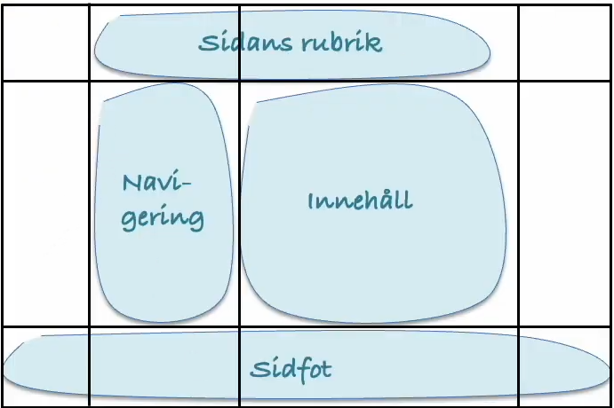

a)
grid-template-columns Bestämmer hur griden ska vara utformad vertikalt
grid-template-rows Bestämmer hur griden ska vara utformad horisontellt
grid-template-areas Bestämmer hur själva layouten av gridnätet vara utformad.
Här är ett exempel på hur en Layout kan vara skapad med grid template areas:
b)
En media query används för att göra förändringar på sidans layout utifrån olika bestämda förutsättningar. Tex. på denna webbsidan så ändras layouten på webbsidan vid bredden på fönstret då den är 900, 600 och 400 px bred.